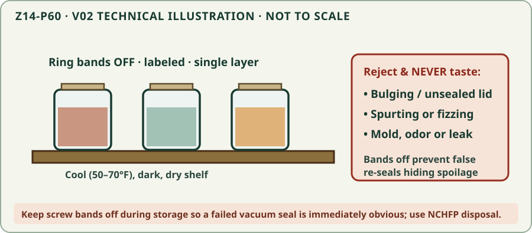

Z14-P60 · Food production and preservation · New manuscript
Store home-canned jars cool, dark, dry, and unstacked for quality and safety
Protect vacuum seals, nutrient quality, and glass integrity across pantry shelves without fabricating multi-decade shelf lives.
When it applies · Sealed, ring-free, labeled home-canned jars entering household pantry storage.
Equipment · Cool dark dry shelving (50–70°F ideal), single-layer or rigid-board spacing, and FIFO date-rotation log.

Actions
- Store ring-free, washed, labeled home-canned jars in a cool (50–70°F), dark, dry pantry—avoid warm spaces above stoves, near furnace pipes, in sunny windows, or in damp basements (rusts lids) and unheated freezing garages (pops seals and cracks glass).[P09, P18]
- Avoid stacking glass jars directly lid-on-jar more than one layer high (or place a sturdy rigid divider board between at most two layers so top jar weight NEVER presses down and creates false seals on lower lids).[P09, P18]
- Rotate home-canned foods strictly First-In, First-Out (FIFO) and plan for best nutritional and seal quality within roughly 1 year—never promise arbitrary 10-to-25-year safe shelf lives for home-canned jars.[P09, P15, P18]
Failure recognition · Stacking heavy quart jars three-high directly on top of bare flat lids beside a warm basement boiler where seals fail silently.[P09, P18]
Verify · Confirm cool (50–70°F), dark, dry, frost-free shelf, ring-free unstacked storage, and clear date labels rotated within ~1 year.[P09, P18]
Stop or change course · Any stored jar showing weeping liquid, lifted lid, rust pitting through the lid, or cloudy gas movement moves immediately to safe spoilage disposal.[P10]
Evidence and editorial notes
- P09 · NCHFP · Using Pressure Canners (current web edition)
- Section: Headspace, Jar Preparation, Two-Piece Lids, and Cooling Seals · Conditions: Mason-type canning jars with two-piece metal lids and screw bands
Support: Use true canning jars (never commercial mayonnaise jars), leave exact recipe headspace, remove trapped air bubbles, wipe jar rims clean, tighten bands fingertip-tight only, and let jars cool undisturbed 12–24 hours before checking vacuum seals and removing rings for storage.
Limitations: Inverting jars, tightening bands after cooling, or re-using flat sealing lids causes seal failure and silent spoilage. · Conflicting evidence: None; directly targets top home-canning mechanical failures.
Editorial note: Grounds jar-seal mechanics and inspection cards in Z14. · Specialist reviewer: Food preservation specialist
Primary source · checked 2026-11-24 - P10 · NCHFP · Identifying and Handling Spoiled Canned Food (current web edition)
- Section: Identifying and Handling Spoiled Canned Food · Conditions: Suspect home-canned food; identify sealed versus open or leaking without exposure
Support: Do not taste. Isolate from people and animals and use current NCHFP or local public-health disposal advice.
Limitations: A sealed lid alone cannot establish a safe process. Reprocessing a sound unsealed jar has separate conditions. Suspected exposure is P23. · Conflicting evidence: See A02 claim audit for boundaries.
Editorial note: Anchors spoilage inspection and safe disposal in Z14. · Specialist reviewer: Food microbiology and public health
Primary source · checked 2026-11-24 - P15 · FEMA / Ready.gov · Emergency Food Supply (current web edition)
- Section: Emergency Food Inventory > Non-Perishable Rotation, Dietary Needs, and Tools · Conditions: Household multi-day to 30-day emergency pantry planning
Support: Build a rotated pantry of familiar shelf-stable foods requiring minimal water and no refrigeration (canned proteins/vegetables, dry grains/legumes, nut butters, infant/medical/pet diets), keep a manual can opener, and mark purchase/rotation dates clearly (FIFO).
Limitations: Do not invent unverified multi-decade shelf lives; commercial "Best By" dates reflect quality while damaged, rusted, or dented-seam cans pose safety hazards. · Conflicting evidence: None; aligns with FSG-4 and NCHFP storage hygiene.
Editorial note: Grounds household food inventory, FIFO rotation, and can-integrity screening. · Specialist reviewer: Household preparedness and food safety
Primary source · checked 2026-11-24 - P18 · University of Minnesota Extension · Harvesting and Storing Home Garden Vegetables (current web edition)
- Section: Dry Grain, Legume, and Pantry Pest/Moisture Protection · Conditions: Cool dry household pantries storing dry beans, grains, flour, and dehydrated produce
Support: Store dry staples and dehydrated foods in cool (ideally 50–70°F), dark, dry locations inside airtight food-grade containers to prevent moisture absorption, rancidity, rodents, and pantry insects; inspect periodically for clumping, webbing, or off-odors.
Limitations: Heat, humidity, and light degrade nutrients and accelerate fat rancidity in whole grains and nuts far faster than refined staples. · Conflicting evidence: None; avoids fabricated 25-year shelf-life promises.
Editorial note: Grounds dry-goods storage, pest exclusion, and spoilage inspection. · Specialist reviewer: Food storage and Extension specialist
Primary source · checked 2026-11-24
Source lineage · NCHFP Storing Home Canned Foods; new manuscript · Classification · New manuscript.